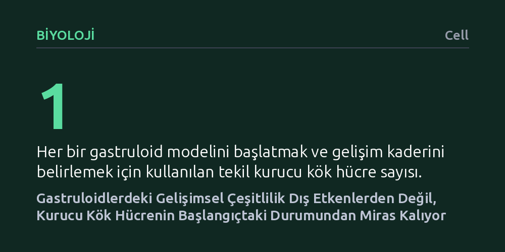

BIYOLOJI · Cell · 2026-10-12
Aynı laboratuvar koşullarında büyütülen gastruloidlerin neden birbirinden farklı geliştiğini araştıran çalışma, klasik dalgalanma testini tekil kök hücrelere uyarladı. Bulgular, dokulardaki bu çeşitliliğin süreç içinde tetiklenmediğini, kurucu kök hücrenin durumundaki dalgalanmalardan miras alındığını ortaya koydu.
Laboratuvar dokularındaki öngörülemez farklılıkların dış çevreden değil, başlangıçtaki tek bir hücrenin durumundan kaynaklandığını göstererek organoid standardizasyonunda odağı ortam koşullarından hücre seçimine kaydırıyor.

Kök hücrelerin üç boyutlu ortamda kendi kendini organize etmesiyle oluşturulan organoidler ve erken embriyo modelleri olan gastruloidler, modern biyolojide doku gelişimini ve hastalık mekanizmalarını incelemek için kullanılan önemli deneysel sistemlerdir. Bu yapılar sayesinde bilim insanları; memeli gelişimini, doku katmanlarının oluşumunu ve hücresel farklılaşma süreçlerini canlı bir organizmaya doğrudan müdahale etmeden laboratuvar kaplarında inceleyebilmektedir.
Ancak bu modellerin pratik kullanımının ve deneysel güvenilirliğinin önünde uzun süredir aşılması güç bir engel bulunuyor: Tamamen aynı kapta, özdeş besin ve sıcaklık koşulları altında yan yana büyütülen yapılar bile birbirinden belirgin biçimde farklı gelişiyor. Kimi gastruloidler uzayıp temel vücut eksenini oluştururken, kimileri küresel kalarak farklılaşma yolundan sapıyor. Yıllardır laboratuvarlarda karşılaşılan bu öngörülemez değişkenlik, deneylerin tekrarlanabilirliğini ve elde edilen sonuçların genellenebilirliğini sınırlıyordu.
Araştırmacılar, bu değişkenliğin kökenini aydınlatmak amacıyla mikrobiyolojinin temel deneylerinden biri olan ve 1943 yılında Salvador Luria ile Max Delbrück tarafından geliştirilen klasik dalgalanma testinin mantığına başvurdu. Luria ve Delbrück, bakterilerdeki faj direncinin virüsle karşılaşınca mı indüklendiğini yoksa önceden var olan rastgele mutasyonlarla mı ortaya çıktığını kanıtlamak için istatistiksel bir dağılım analizi kurgulamıştı.
Bu çalışmada aynı mantık, tekil kök hücrelerden laboratuvarda büyütülen gastruloid modellerine uyarlandı. Deneyin mantığı net bir ayrıma dayanıyordu: Eğer gastruloidler arasındaki yapısal farklılıklar büyüme sürecinde ortaya çıkan rastgele çevresel gürültülerden kaynaklanıyorsa, yapılar arasındaki çeşitlilik dar ve Poisson dağılımına uygun bir seyir izlemeliydi. Buna karşın çeşitlilik kurucu hücrenin başlangıç durumundan kaynaklanıyorsa, hücre bölünmeleri boyunca aktarılan varyasyon çok daha yüksek bir dalgalanma göstermeliydi.
Elde edilen bulgular, organoid alanında uzun süredir kabul gören yaygın varsayımları değiştirecek nitelikte bir sonuca işaret etti: Gastruloidler arasındaki yapısal ve gelişimsel çeşitlilik, büyüme sürecinde dış ortamın etkisiyle indüklenmiyordu. Aksine, gözlemlenen bu değişkenlik büyük ölçüde kalıtsaldı ve hücre nesilleri boyunca aktarılıyordu.
Araştırmacılar bu kalıtsal farklılıkların kaynağını doğrudan yapıyı başlatan tekil kök hücrenin o anki durum dalgalanmalarına kadar takip etti. Kök hücreler genetik olarak özdeş olsalar bile, gen ifadesi ve pluripotens düzeyleri açısından dinamik bir dalgalanma sergiler. Deneyler, tabağa yerleştirilen tek bir kurucu kök hücrenin o an yakalandığı özgül hücresel durumun, o hücreden çoğalarak oluşan tüm gastruloidin nihai gelişimsel kaderini belirlediğini gösterdi.
Bu bulgu, kök hücre biyolojisi ve doku mühendisliği açısından pratik yaklaşımı doğrudan etkileyecek bir içgörü sunuyor. Bugüne kadar araştırmacılar organoidlerdeki değişkenliği azaltmak için çoğunlukla dış koşulları kusursuzlaştırmaya çalıştı; büyüme faktörlerinin dozajını, sıcaklığı, matriks jelinin yapısını ve besin ortamlarını milimetrik olarak optimize etmeye odaklandı. Ancak bu çalışma, dış çevre ne kadar kusursuz kontrol edilirse edilsin, başlangıçtaki hücrenin iç durumu denetlenmediği sürece değişkenliğin kaçınılmaz olduğunu ortaya koyuyor.
Gelecekte daha standart ve tekrarlanabilir organoid veya gastruloid modelleri üretebilmek için artık sadece büyüme ortamının kimyasını denetlemek yeterli olmayacak. Araştırmacıların, doku üretimini başlatmadan önce kök hücrelerin anlık durum dalgalanmalarını izlemesi ve yalnızca belirli moleküler durumda bulunan kurucu hücreleri seçerek yola çıkması gerekecek.